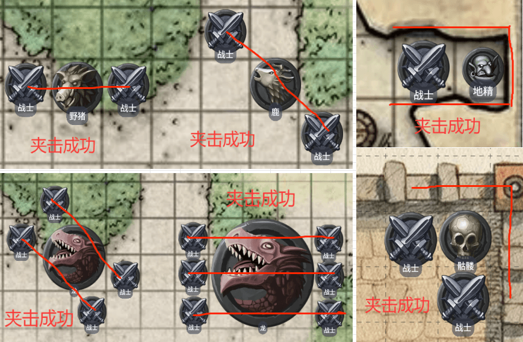

种族
生物类型根据拥有的魔法性、与自然联系的紧密型以及来源地被分为：凡骨生物、精类生物、元素生物、天界生物、邪魔生物、异怪生物、不死生物、构装生物、龙类生物和怪物生物十大类。
体型
每个生物都占据着不同大小的空间。表格“体型分类”列出了战斗中受控的特定体型生物所占据空间的大小。有时候物件也会使用相同的体型分类。
体型 | 占据空间 |
微型 | 0.5×0.5米 |
小型 | 1×1米 |
中型 | 2×2米 |
大型 | 4×4米 |
巨型 | 6×6米 |
超巨型 | 8×8米或更大 |
生物所占据空间米数即为其在战斗中的有效控制范围，而非其肉体米数。例如，一个普通的中型生物并没有2米宽，但他还是可以控制这个宽度的空间范围。如果一只中型的大地精站在一扇2米宽的门道前，则其他生物都无法在其让道前通过这道门。
生物所在空间还代表该生物进行有效战斗所需的空间大小。因此，一个生物身边可以围绕的生物数量存在一个极限值。例如八个中型的参战生物可以在2米圆形范围内将另一生物围起。
体型越大的生物其身躯占据的空间也越大，他们围起某一生物时就只能有更少个体参与其中。如果五个大型生物围着一个中型或更小体型的生物，则此时已没有更多空间让其他生物加入围攻。而相对来说，二十个中型生物依然可以将一个超巨型生物围起。
格子地图
如果你用方格地图和微模型或其他标记物来演示战斗，请遵从以下规则。
方格：地图上的每一格代表2米。
速度：你一格一格地移动，而不是一米一米地移动。这意味着你以2米为单位使用你的速度。你可以将速度除5转成格数以便处理。例如，10米速度可以换成5格速度。如果你常常在格子上走，你可以考虑在你的角色表里直接用格数记录速度。
进入格子：你要有至少1格的剩余移动力才能进入邻近的格子，或者对角的格子。如果有格子需要额外的移动力（例如困难地形的格子），则你必须有足够的剩余移动力才能进入该格。例如，你需要2格的剩余移动力才能走入一格困难地型。
对角：对角移动不能跨越墙角或大树等填塞整格地型的角落。
距离：判定格子地图上两件东西距离时（无论生物或物件），必须从其中一方所邻接的格子开始算，算到另一方所在的格子。其总数以最短路径为最终结果。
夹击
夹击为参战者提供了一个发动攻击检定时获取优势的简单方案。
生物无法夹击一个他看不到的敌人，也不能在自己处于失能状态的情况下夹击敌人。一个大型或更大体型的生物至少要他所在的空间中有一格满足实施夹击的条件，才可与他人形成夹击。
当一个生物与他的一个盟友，且分别身处敌人所在空间2米内的对角时，两者便对敌人形成夹击，此时这两者对敌人发动的近战攻击检定获得1d6加值。特殊的，当你骑乘时，你以你坐骑的体型来判定夹击。
质疑方格上的两个生物能否对敌人造成夹击时，可以在这两个生物所在空间的中央连出一条直线。如果这条线可以穿过敌人所在空间的对侧或对角，则敌人被夹击。一个中体型或更小的生物，只需要1条穿过对侧或对角线即可夹击，而大型生物则需要2条，巨型生物需要3条，超巨型则需要四条或更多。
特殊的，在一个生物东南西北中，两面都是无法跨越障碍（比如墙）时，若其另外两面若也有生物，则其也会被这两个生物夹击。而若其三面都是障碍，则一个生物就能将其夹击。

绕过其他生物
你可以穿越非敌对生物占据的空间，但却不能穿越敌对生物所占据空间，除非该敌对生物的体型比你大或比你小两级。而其他生物的空间对你而言皆为困难地型。
不论是敌是友，你都不能主动在其他生物的空间里自主的停止移动。
另外，你在移动中离开敌对生物的触及范围时将触发敌人的借机攻击。
挤身通过狭窄空间
生物可以挤身通过比自身体型小一级生物刚好可占据的空间。因此，大型生物可以挤身通过只有2米宽的通道。
挤身通过某空间时，该生物前进每米距离需要花费额外1米的移动力，且其攻击检定与敏捷豁免具有劣势。如果对正挤身进入狭小空间的生物发动攻击，则该攻击检定具有优势。
天生护甲
天生护甲指一个生物在不借助外力的情况下，其本身的防御能力。
一个生物在未着装任何护甲，且未在种族中获得天生护甲增益时，其默认天生护甲AC为10+敏捷调整值。
如无特殊说明，任何生物通过任何途经所拥有的天生护甲，在调用属性调整值时，每项属性最多只能取5点调整值。
感官
部分种族具有的特殊感官。具体的特殊感官如下。通常来说，拥有盲视、颤动感知、真实视觉和热感应的生物，在其对应感官范围内可以无视其他生物的隐蔽、隐形。
特殊的，除非有以下描述：
·你的某感官”提升“至……
·你获得”额外“的某感官
否则你多种来源的相同特殊感官始终只取最高者。
黑暗视觉
具有黑暗视觉的生物在黑暗中可以看清一定的半径范围。
该生物在微光环境中视物时视为处于明亮光照环境，而在黑暗环境时则视为处于微光光照环境中。
该生物无法在黑暗环境中分辨颜色，只能看见以灰度显现的形状。许多生活在地底的生物都具有比地上生物更强的增强黑暗视觉。
盲视
具有盲视感官的生物在不依赖视觉的情况下，依然可以感觉一定的半径范围。
一些没有眼睛的生物，是典型的盲视物种。从另种意义来讲，使用回声定位以及高敏感官的生物也视为具有盲视感官，如蝙蝠。
颤动感知
具有颤动感知的生物可以对一定半径范围内的、与其自身接触同一地面或物质的震动源进行感知。颤动感知可以感知到附近是否有震动，而不能感知到更多信息。
而特殊的，拥有倔穴速度的生物，全身处于地底时，可以感知到振动源的精确位置。许多掘穴生物都具有颤动感知。
真实视觉
具有真实视觉的生物在一定半径范围内，可以看透魔法或非魔法产生的黑暗，可以看见隐形的生物与物品，可以自动侦查出视觉幻象并直接通过其豁免检定，还可以直接看穿变形生物或用魔法进行变形时的真实形态。此外，该怪物还可以看到同样范围内以太位面的情况。
热感应
具有热感应的生物可以对一定半径范围内的温度差进行感知。在水下环境热感应会失效，依靠热感应变温生物时，进行的感知检定具有劣势。
心灵感应
心灵感应是一种允许在一定范围内进行心灵交流的魔法能力。进行心灵交流的生物不需要掌握同一门语言，但必须先掌握至少一门语言。没有心灵感应能力的生物可以接收和回复感应信息，但不能发动或切断一场心灵感应交流。
具有心灵感应能力的怪物可以随时切断心灵连接，而不需要看见连接的对方。当心灵连接的两只生物离开感应范围，或者具有感应能力的生物与另一个生物建立新的连接时，原本建立的心灵连接将自动断开。具有心灵感应感官的生物可以随时发动或终止心灵连接，而不需要使用任何动作。但当该怪物处于失能状态时，将无法发动心灵连接，而已经建立的连接也将无法维持。
在反魔法场中或魔法无法生效的区域里，生物的心灵信息将无法发送和接收。
速度
速度分为步行速度、攀爬速度、游泳速度、飞行速度、掘穴速度。当从任何种族特性以外的途经获得额外移动力时，若没有限定速度类型，则你可以将其使用在任意速度中，前提是你原本至少拥有该速度8米的移动力。
步行
最常见的移动方式，多数生物都会用腿走路。
但通常你无法只靠步行移动来穿越危机四伏的地城或荒野。冒险者常常需要通过攀爬、匍匐、游泳、跳跃等活动的辅助，才能到达想去的地方。
当攀爬或游泳时，若你没有攀爬或游泳速度，则每移动1米都要多花额外1米移动力（困难地形上则额外花2米移动力），除非生物本身具有攀爬或游泳速度。
DM可以在角色攀爬某些湿滑或缺乏立足点的墙壁时，要求其进行一次力量（运动）检定以判断该角色是否通过。同理，在汹涌的水中前进也可以要求其先进行一次力量（运动）检定，以判断该角色是否成功通行。没有攀爬或游泳速度的生物，在该检定中具有劣势。
攀爬
具有攀爬速度的生物可以使用其速度行走于垂直和平行表面之上，无需花费额外的移动力。
游泳
具有游泳速度的生物游泳时，无需花费额外的移动力。
飞行
具有飞行速度的生物可以使用其速度进行飞行。但同时他们也必须面对可能坠落的危险。如果一个飞行生物应击而倒地，或者速度被降为0，又或者因其他原因被剥夺了移动能力，则该生物从所处高度坠落。而如果该生物具有空中悬浮的能力，或者被魔法举起到半空，则可借此避免坠落。
通常情况下，你能移动的最大米数，以你移动力最高的速度为准。如果你有多种速度，例如步行速度和飞行速度，则你可以在移动中随时切换移动方式。
例如：假设你有10米移动力的步行速度与20米移动力的飞行速度，那么你在回合内只能移动20米，你可以全部以飞行的方式移动20米，也可以先飞行10米再步行10米。
掘穴
具有掘穴速度的生物可以使用其速度穿越沙地，土地，泥地，或冰体。掘穴怪物不能穿越硬质岩石，除非他具有可以这么做的特殊特质。
天生施法
若无特殊说明，所有从种族中获得的施法能力都属于天生施法。特殊的，通过种族习得的戏法，也属于天生施法。
天生施法 | ||||
等级 | 法术 | 施法属性 | 长休or短休/次 | 其他 |
— | — | — | — | — |
等级：这一栏标明了你该法术的获得等级，你在到达相应等级时，你可以通过天生施法特性使用这一行的法术。
法术：这一栏标明了该天生施法特性允许你使用的法术。
施法关键属性：这一栏标明了该法术的施法关键属性。你天生施法的法术的豁免和攻击检定，则使用你的施法关键属性调整值。
法术豁免＝8＋你的熟练加值＋你的智力调整值。
法术攻击调整值＝你的熟练加值＋你的智力调整值。
长休or短休/次：如无特殊说明，所有天生施法，都可以不消耗法术位的使用一次，这一栏标明了该法术的使用次数在短休还是长休后恢复。许多天生施法允许你使用其他来源的法术位（通常来自职业），来施展该法术，但不使用该使用次数的施法，在规则上不属于天生施法特性施展的法术。
其他：这一栏标明了该法术的特殊说明（若有），当你等级不足以通过天生施法特性使用这一行的法术时，这一栏描述的效应不生效。
天生武器
有些种族拥有天生武器。如无特殊说明：
·相同的天生武器你都只有一个，比如牛头人的牛角，虽然牛头人有两只角，但在规则上这两只角属于同一个天生武器。
·天生武器无需持握，即你可以在双手都拿着其他物品的情况下使用天生武器攻击。
而名称中带有“爪”字的天生武器，为爪类天生武器，不遵守上述规则。如无特殊说明，爪类天生武器你默认每只手拥有一个，且使用爪类天生武器发起攻击时，你拥有爪类天生武器的手中不能持握任何物品。
若你拥有多个来源的爪类天生武器，则你只能在每只手上选择保留其一（但你可以在两条手臂上应用不同的爪类天生武器），未被你选择的将会失去。当你成为一次高等复生术的目标时，你可以选择切换你的爪类天生武器。